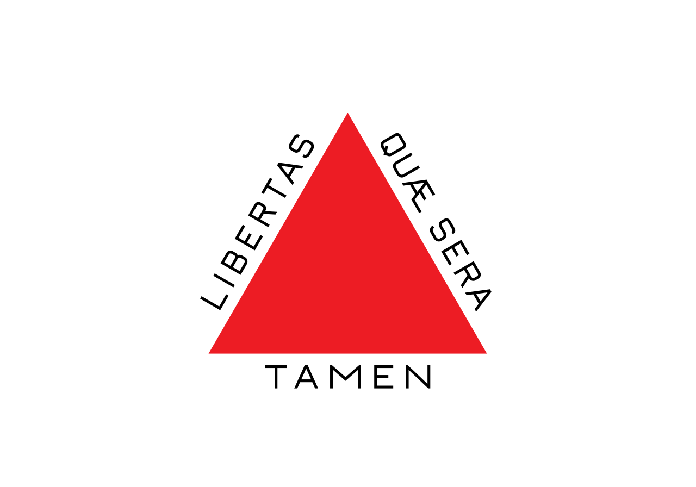

Pedro Henrique Cordeiro de Lacerda Ribeiro
My name is Pedro. I was born in São Paulo, Brasil, and today I live in Minas Gerais. I currently work as an IT analyst for a technology company. In my free time, I enjoy practicing sports, and I am studying to become a software developer.

Minas Gerais

Official flag of Minas Gerais
Minas Gerais is one of Brazil's 27 federative units. It is the fourth largest state by area and the second most populous, with 20,539,989 inhabitants according to the 2022 census.